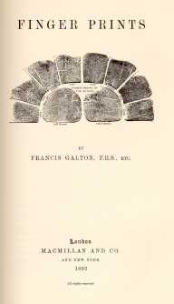
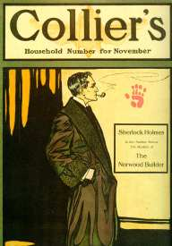
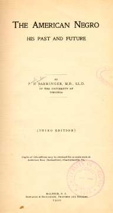
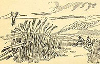
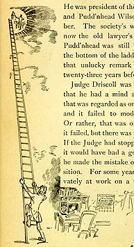

Pudd'nhead's SourcesMT worked on this
humorous tale during 1892, but as he was writing it (to
quote again from his introductory remarks about Those
Extraordinary Twins), "it changed itself from a farce
to a tragedy" when two characters he had introduced into
the story, "a stranger named Pudd'nhead Wilson, and a woman
named Roxanna," "intruded" themselves into the narrative
and "pushed up into prominence a young fellow named Tom
Driscoll." Tom had been in the tale originally as a rival
to the fair-haired "twin," Angelo, for the affections of
Rowena, whom MT calls "the light-weight heroine." In his
new story, however, Tom became the son of Roxy, "a negro
and a slave" passing as white. The manuscript survives (at
the Morgan Library), but it doesn't clearly answer the
question of why MT's intentions and the mood of his tale
changed. In November, 1892, after he had already decided to
feature the story of changelings but while the details of
that plot were still evolving, MT acquired a copy of
Finger Prints, by
Francis Galton. Galton (1822-1911) was a British scientist
and a cousin of Charles Darwin whose main interest was in
heredity. He coined the term "eugenics." At several points
in Finger Prints he discusses his subject in the
context of race and class, although he acknowledges that
the data will not support his "great expectations" -- that
fingerprints would display racial differences. After
reading Galton's book, MT enthusiastically decided to
feature fingerprints in the story. In Chapter Two MT's
narrator says Roxy's race is "a fiction of law and custom."
When Wilson uses fingerprint evidence in the courtroom to
prove Tom and Chambers' "true" identities, however, he is
in a sense using them to establish race.  MT's decision to feature fingerprints was either a
cause or an effect of the way his story was becoming a kind
of detective story. In the early summer, 1893, he made the
wholesale manuscript revision he referred to as a "literary
Caesarian operation," pulling out the story of the
"Siamese" twins to "center" the entire narrative, as he put
it in a letter, "on the murder and the trial." In this, the
published version, Pudd'nhead Wilson plays the part of the
analytical observer who will interpret the evidence and, at
the end, solve the mystery and expose the criminal. Like
twins, detectives were a longtime fascination of MT's. One
even appears, briefly and ineptly, in Tom Sawyer
(1875). Most of his variations on the theme of detection
are burlesques or satires, intended to expose the genre
itself. In A Double-Barreled Detective Story (1902),
for example, he brings Sherlock Holmes to the American west
and has him conspicuously fail to solve a murder. Arthur
Conan Doyle's tales about Holmes began appearing in 1887,
with A Study in Scarlet ("The Norwood Builder,"
left, appeared in 1903). By the time MT wrote Pudd'nhead
Wilson, Doyle's stories were extraordinarily popular
with readers around the world. The design of those tales
and the character of Holmes were clearly influences on the
novel as MT wound up writing it, but it is perhaps an open
question whether Pudd'nhead Wilson imitates or
subtly subverts the conventions of detective fiction.
Wilson's "detection" of the murderer restores the social
order that had been violated by both Roxy's switch of the
babies and Tom's murder of Judge Driscoll, but the ante
bellum society he restores is based on slavery.  Pudd'nhead
Wilson is MT's most direct and
sustained imaginative engagement with the issues of slavery
and race, but although it has never been controversial in
the way Huck Finn is, there is no critical consensus
about whether the novel is racist or anti-racist, about
what the novel is saying or implying about race. Like Huck,
the characters in the book are all shaped by a slaveholding
culture, and so racist themselves. After living in Dawson's
Landing for fifteen years, for example, Wilson thinks of
the "drop of black blood" in Roxy's veins as
"superstitious," and Roxy herself, though a "negro," has so
completely internalized the society's prejudice against her
that she blames her own son's baseness on the "one part
nigger" in him. The idea that there was such a thing as
"black blood" and that a drop of it could determine
character was even more prevalent in the 1890s, when MT was
writing, than in the ante bellum society he is writing
about. The Jim Crow laws being enacted across the South
were given a pseudo-scientific authority by the idea that
race was hereditary, and that racial inferiority or
degradation could be empirically established. Phrases like
"black blood" and "part nigger" would, for its original
readers, link the novel to such contemporary discourse. As
an example of that, I'm including here excerpts from
an essay by Dr. Paul Barringer,
of the University of Virginia hospital, which defines the
"negro" and the threat he represents to civilization in
these quasi-Darwinian terms. In most of his writings, MT
emphasizes the way cultural conditioning (what he calls
training) determines identity and destiny. Pudd'nhead
Wilson says, for example, that Tom "was a bad baby, from the very beginning of his
usurpation" -- which could be interpreted to mean that his
"badness" reflects his nurturing, not his nature. But
Pudd'nhead Wilson also refers to his "native
viciousness," a phrase that echoes the "scientific" racism
of the times. In the manuscript of Pudd'nhead Wilson
MT wrote a passage depicting Tom's own
anguished thoughts about his divided racial
inheritance, in which he specifically asserts that both
"white" and "nigger blood" can be a source of high
qualities, and specifically attributes his own viciousness
to slavery, not innate savagery. But MT deleted the
passage. Whether the published novel was calculated to
challenge or reinforce contemporary doctrines like
Barringer's is a difficult question to decide. If you look
at the reviews included in this site, it's interesting to
note that the first two, written on the basis of the early
chapters as the story appeared serially in The Century
Magazine -- one northern and
favorable, the other southern
and unfavorable -- both clearly assume that by telling
the story of the changelings MT will vindicate the "slave"
Tom in much the same way that, with the switch that occurs
in The Prince and the Pauper, he affirmed the
democratic worth of the "pauper" Tom Canty. The reviews
that were written after the whole novel appeared, however,
don't treat race or slavery as an
important feature of the story. One British review calls the story a
"vigorous indictment of the old social order of the South." On the other hand, the only two American
reviewers who notice the racial theme -- in the Washington Public Opinion and in
the Hartford Times -- have no doubt that it confirms the hereditary effects of "white blood" and "nigger blood." The 1890s were one of the
lowest points in the whole unhappy history of race
relations in America: there were more lynchings than at any
time before or since, and in the Supreme Court's Plessy
v Ferguson decision, the idea that any "black" ancestor
meant you could be labeled "black" and segregated away from
"whites" was upheld as the law of the land of the free.
Whether and how Pudd'nhead Wilson reflects and
participates in these patterns is something modern readers
have to decide for themselves. Chronologically the earliest source for MT's story
was the world Sam Clemens had grown up in. He'd written
about Hannibal before, notably in Tom Sawyer. As St.
Petersburg Hannibal is called a "western" and a
"southwestern" village; about the only hint in Tom
Sawyer of the social themes that preoccupy
Pudd'nhead Wilson -- slavery, race, miscegenation --
is the reference to the "white, mulatto and negro boys and
girls" Tom could have found hanging around the town pump,
if Aunt Sally hadn't made him whitewash the fence. Aunts
and children played a large role in the farce MT began
with, the comedy of the twins, but in the story he wound up
writing, the tragedy of the changleings, they are pushed to
the margins of the narrative. Probably after the farce
started to darken, MT decided to move the village down the
river, "half a day's journey, per steamboat, below St.
Louis." Along with the move south, the racial issues that
had been marginalized in Tom Sawyer come to occupy
the center of the story. Pudd'nhead Wilson is MT's
most explicit look at Hannibal as a "slaveholding town."
Dawson's Landing is Hannibal, re-viewed -- St. Petersburg
re-imagined without a hint of
nostalgia.  To the extent that Pudd'nhead Wilson is the story of Wilson himself, and his rise to the status of celebrity in Dawson's Landing, I believe that another significant source was MT himself -- that is, Samuel Clemens' adult career as "Mark Twain." The story of how David Wilson went west "to seek his fortune," and fought, as the last chapter puts it, "against hard luck and prejudice" in order to become "a made man" is in essence the archetypal American success story. Its emphases, however, are particularly Twainian, especially in the way Wilson's quest is not for money or power, but for attention and popularity. He becomes a successful lawyer and Mayor of the village, but the climax of his story is his spectacular performance in the courtroom, one of the most elaborate and dramatic of the many performance scenes in MT's fiction. His achievement is described in the last chapter, when troops of citizens flock to him and require a speech. This was not only one of MT's specialties; it also echoes the happy ending at the end of Tom Sawyer, where everything Tom says has become remarkable. If Wilson's triumphant performance in the courtroom, however, is an imagintive reenactment of MT's popular reception, it makes MT's decision to call the novel The Tragedy of Pudd'nhead Wilson that much more resonant. |